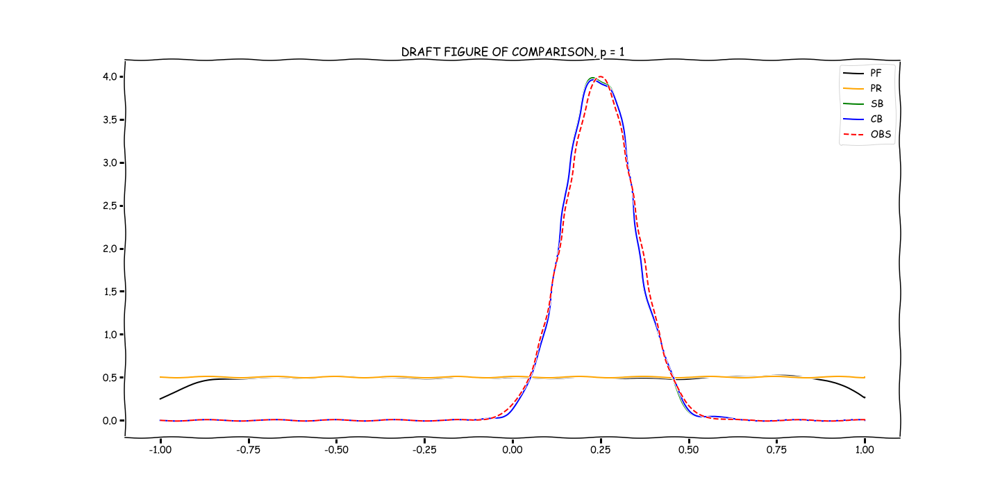

Examples
Please pardon our construction.
We will soon have full-fledged documentation up and running, including for the examples we present.
For now, the notebooks in the repository in the examples directory should be a good starting point.
For the monomial given in the code block in Usage, we have the following solutions for p = 1 and p = 5:
